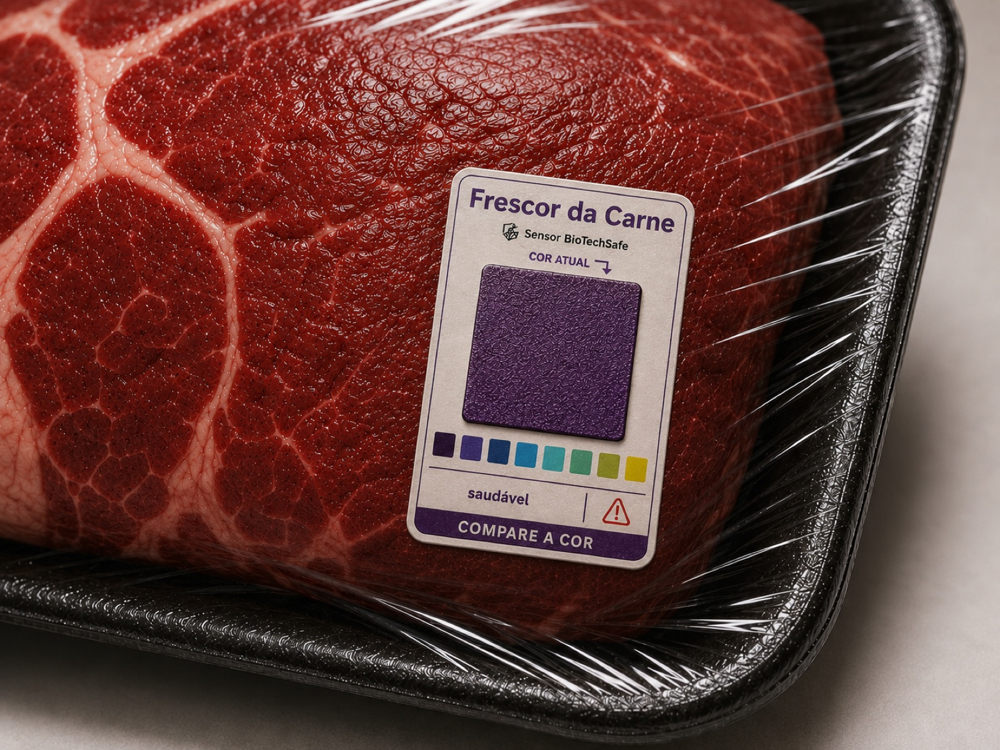

Um biossensor natural, aplicado do lado externo da embalagem, que reage ao próprio processo de deterioração da carne — em tempo real, sem abrir o pacote.

O princípio
A BioTechSafe usa antocianinas, os mesmos pigmentos responsáveis pela cor roxa da jabuticaba. Antocianinas são naturalmente sensíveis a mudanças no ambiente ao seu redor: alteram sua estrutura, e portanto sua cor, conforme o pH muda ao redor delas — o mesmo princípio de um papel de tornassol de laboratório, só que com um pigmento comestível e de origem vegetal.
Conforme a carne se aproxima do ponto de deterioração, bactérias e enzimas naturais começam a quebrar as proteínas presentes nela. Esse processo libera compostos voláteis, entre eles o gás de amônia, que muda o pH no ambiente próximo à embalagem. É esse gás que o sensor detecta.
O resultado prático: o sensor muda de cor de forma visível, seguindo a mesma escala usada em todos os produtos BioTechSafe — do roxo (fresca) ao amarelo (descarte) — permitindo checar o estado da carne com um olhar, através da embalagem fechada.
A construção
O sensor é pensado para ficar colado do lado de fora da embalagem, protegido e funcional do transporte até o ponto de venda.
A parte central, onde vive o pigmento de antocianina, fica voltada para o ambiente interno da embalagem — é ali que a reação de cor acontece.
Uma camada interna permite a passagem do gás liberado pela carne, mas bloqueia líquidos que possam entrar em contato durante o transporte.
Um filme com baixa permeabilidade à umidade sela e protege o sensor do ambiente externo, sem interferir na leitura visual da cor.
Fixa o sensor com segurança do lado externo de qualquer embalagem padrão de açougue ou restaurante, sem alterar a rotina de embalagem atual.
Uma fruta nativa brasileira, rica em antocianinas, com cadeia de fornecimento local. Isso mantém o sensor natural, de baixo custo e alinhado à nossa origem.
O desenvolvimento conta com apoio de pesquisadores da UFRJ e da UFSC, validando o comportamento do pigmento e a resposta do sensor ao gás de amônia.
Não é sobre substituir a validade. É sobre mostrar o que ela nunca conseguiu mostrar: o estado real daquela peça específica, naquele momento.
BioTechSafe